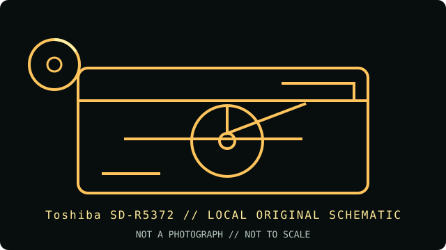

[ INDIVIDUAL COMPONENT // OPTICAL DRIVES ]
Toshiba SD-R5372
Toshiba SD-R5372 is a 5.25-inch ATAPI writer with a notable 5× DVD+R DL rating. DVD-RAM is supported for reading only; it is not a DVD-RAM recording drive.

IDENTIFICATION: Toshiba SD-R5372 · Internal 16× DVD±R writer with DVD+R DL support. Match the full model and revision marking to the cited archive before applying variant-specific specifications.
Model-specific specifications
| Catalog subcategory | DVD writers |
|---|---|
| Exact product identifier | Toshiba SD-R5372 |
| Generation / product type | Internal 16× DVD±R writer with DVD+R DL support |
| DVD/CD media support | Writes DVD-R, DVD-RW, DVD+R, DVD+RW, DVD+R DL, CD-R and CD-RW. Reads DVD-ROM, DVD±R/RW, DVD+R DL, DVD-RAM and common CD audio/data formats. DVD-RAM read is rated at 2×; no DVD-RAM write format is listed. |
| Maximum read/write speeds | Write: DVD±R up to 16×; DVD+R DL up to 5×; DVD+RW up to 8×; DVD-RW up to 6×; CD-R up to 48×; CD-RW up to 24×. Read: DVD-ROM up to 16×; CD-ROM up to 40×; DVD-RAM up to 2×. Exact rates depend on firmware and media. |
| Interface and mechanics | Internal 5.25-inch ATAPI (PATA), with IDE master/slave/cable-select jumpers and standard PC 5 V/12 V power. UDMA 33 / PIO 4 modes are documented. |
| Host compatibility | Designed for a legacy PC with 40-pin IDE/ATAPI controller, 5.25-inch bay and optical recording software. Contemporary OS/application support is not guaranteed; verify BIOS detection and media handling on a modern IDE bridge if used. |
| Variant and use notes | The SD-R5372 reads DVD-RAM but does not write it. The specific 5× DVD+R DL ceiling and 16× DVD-R mode are manufacturer/product-family-specific; blank media and firmware can force lower rates. |
Compatibility and preservation
Advertised maximum rates are media- and firmware-dependent; they are not a guarantee for aged, damaged or unsupported discs. For archival work, retain the full drive model, firmware, media identifier, write strategy and software version with the image or master.
- Confirm the complete label and PATA jumper position before installing; do not infer capabilities from a related suffix or OEM rebrand.
- Use supported blank media and a compatible recorder application, then verify the completed disc by readback and checksum.
- Handle optical media by its edge or hub, store it in a cool, dry location, and preserve an unmodified original when possible.
Manufacturer and archive sources
- Toshiba SD-R5372 product specifications — CDRInfo archiveModel-specific formats, 5× DVD+R DL, 2× DVD-RAM read and ATAPI details.
- Toshiba SD-R5372 user manual — ManualsLib archiveArchived Toshiba manual with specification and installation sections.
These references document the named model/family; they do not certify a particular used drive, firmware revision or blank-media batch. Confirm exact suffix and region/OEM variant on the hardware label.